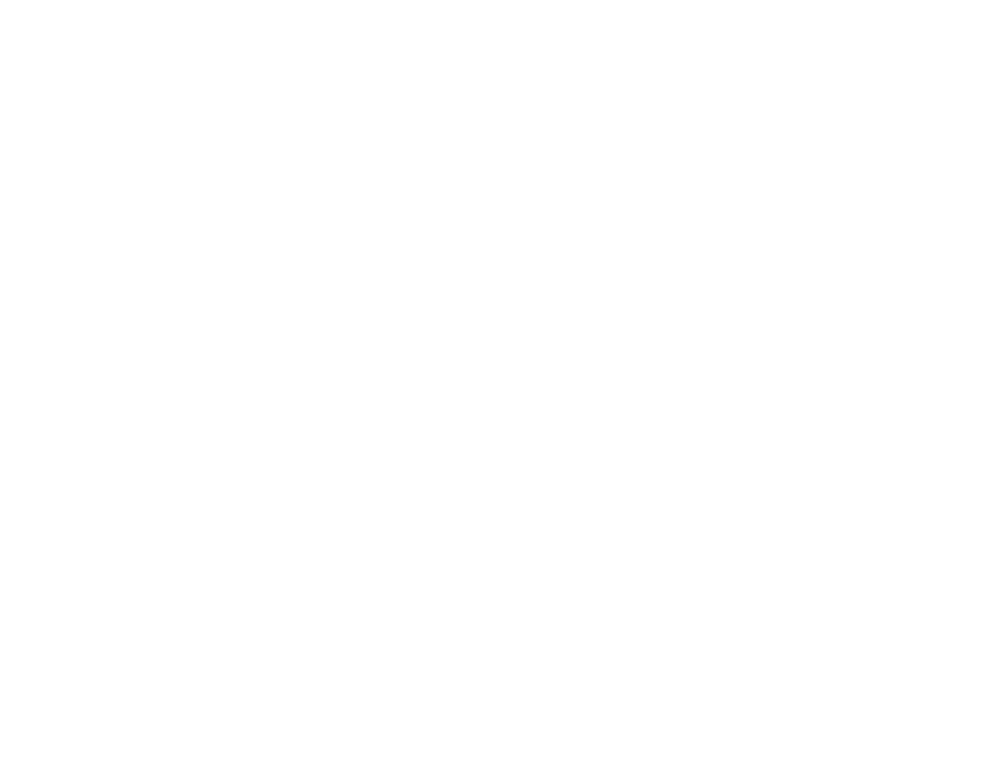

골든 기준 생성 중 개발 서버 연결 단절
실행한 검사 결과 · 2026-09-21T03:21:18.352Z
브라우저 기능 14개 통과 후 커피차 골든을 준비하던 중 개발 서버 HMR 연결이 끊기고 자동 새로고침이 발생했습니다. Trace에서 연결 단절 뒤 페이지 실행 문맥이 사라진 것을 확인했습니다. 연결이 끊긴 원인 자체는 미확정입니다.
해당 환경 오류는 소스나 비교 허용 오차를 바꾸지 않고 HMR이 없는 빌드 preview 서버에서 남은 기준을 생성하여 회복했습니다. 이후 추가 요청에 따라 회사별 사업 그래픽을 적용하고 최종 회귀를 다시 실행했습니다. 독립 비교 최종 결과는 골든 비교 보고서에서 확인할 수 있습니다. 앞서 통과한 기능 14개 결과는 그대로 보존했습니다.
실패를 포함한 최초 실행 JSON · 오류 문맥 · Trace
